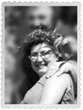

Bengül Anne
Bengül İzgören de ablam. “E hep akrabaları, arkadaşları oynatmışsın filmde” diyeceksiniz. Normal değil mi? Angelina Jolie’yi mi oynatacaktım? Yalnız benim ablam, kokoşlukta onları geçer. Simin, “Halam çok zengin değil mi?” dediğinde “Niye öyle düşündün?” diye sordum, “Bak, saçı zenginlikten kıvır kıvır olmuş!” dedi. Olayı bir türlü çözemedik. Diş hekimi bir devlet memurudur ablam. Çalışkanlığıyla, sağlam karakteriyle benim için model oldu hayat boyu. Çok kıymet bilir, çok... Kitapta böyle üç katlı köşk sahibesi kim olur diye düşününce benim kızıl saçlı kokoş ablam aklıma geldi. Sanem de az kokoş değildir. Kızlarım da halalarına çekmişler. Canımdır o benim. Uzun yolda aklıma geldiğinde gözlerim dolar.
